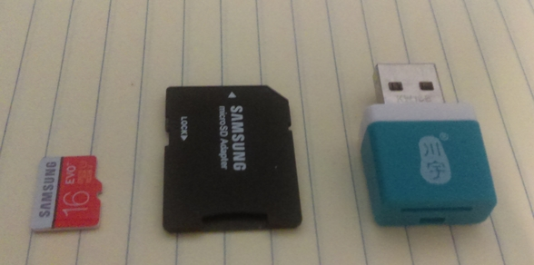
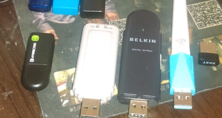

In this section, I only mention about the hardware you may need it.
The Software/OS requirement part in the
course/operate-system/operate-system.md
.
The standard computer will be fine, whether a Desktop or Notebook.
Choose the solution that come into your condition.
Condition : The computer bios is not locked or you can boot computer from a USB device.
To avoid of troubleshooting in Windows OS, such as install Ethernet Driver for Lego EV3, use putty(ssh) remote access Lego EV3(ev3dev), using WinSCP(scp)…
Please use a Linux Live USB, due to most school computer might have installed recovery card by the school computer department and also strictly ban student to install software/OS on the computer.
The boot menu is always available at comptuer startup screen(the logo), most of the bios boot menu is at F12(keyboard). Prese F12 after you press the power button to boot up the computer to enter boot menu.
Condition : The computer bios is locked or you can’t boot comptuer from a USB device
Download
VMware player
,
Virtual box
install into USB memory strick also copy the binary installer into USB memory strick.
Download GNU/Linux distro image.
Install GNU/Linux into virtual machine or using a live GNU/Linux(which not install).
Your school is amazing!, go next section - Lego EV3 .
Use
VMware player
,
Virtual box
to run GNU/Linux System is fine.
Install GNU/Linux on Notebook is the best!
here isn’t recommend you to buy Lego EV3 but only recommend for who already have the Lego EV3
Lego mindstorm EV3 (part 31313) 350USD
Rechargeable Battery (part 45501) 85USD

| mircoSD 16GB | mircoSD to SD card slot | mircoSD usb reader |
|---|
a microSD card is indeed to install ev3dev.
a quota from : http://www.ev3dev.org/docs/getting-started/
A microSD or microSDHC card (2GB or larger). microSDXC is not supported on the EV3. All cards larger than 32GB will not work with the EV3!
If you don’t have a microSD or microSDHC (2GB to 16GB), read the follow, otherwise skip it.
In the 3C market, the mircoSD card of 8GB or 16GB which have higher C/P than the 2GB/4GB mircoSD card, also better storage size for other Single Board Computer to install OS if you wanna try other SBC later on.
If you don’t have microSD card for Lego EV3, I recommend you buy 8GB or 16GB mircoSD\microSDHC card.
The Wifi dongle on Lego EV3 is an optional hardware for setup wireless connection between Computer and Lego EV3.
If you already can connect Lego EV3 through Wifi dongle, skip this section!
The Wifi dongle work on Lego EV3
Some cheap(low cost) Wifi dongle should avoid which don’t work on Lego EV3.

| Name | 360 generation 3 | D-Link DWL-G122 | BELKIN F5D7050 | MERCURY | iFast |
|---|---|---|---|---|---|
| Chip | mtk7603 | RT2571W | ISL3887 | rtl8188eus | rtl8188eus |
| Work | No(No Linux firmware) | Maybe | Work | No(ev3dev) | No(ev3dev) |
List of Wi-Fi Device IDs in Linux - WikiDevi
-
https://wikidevi.com/wiki/List_of_Wi-Fi_Device_IDs_in_Linux